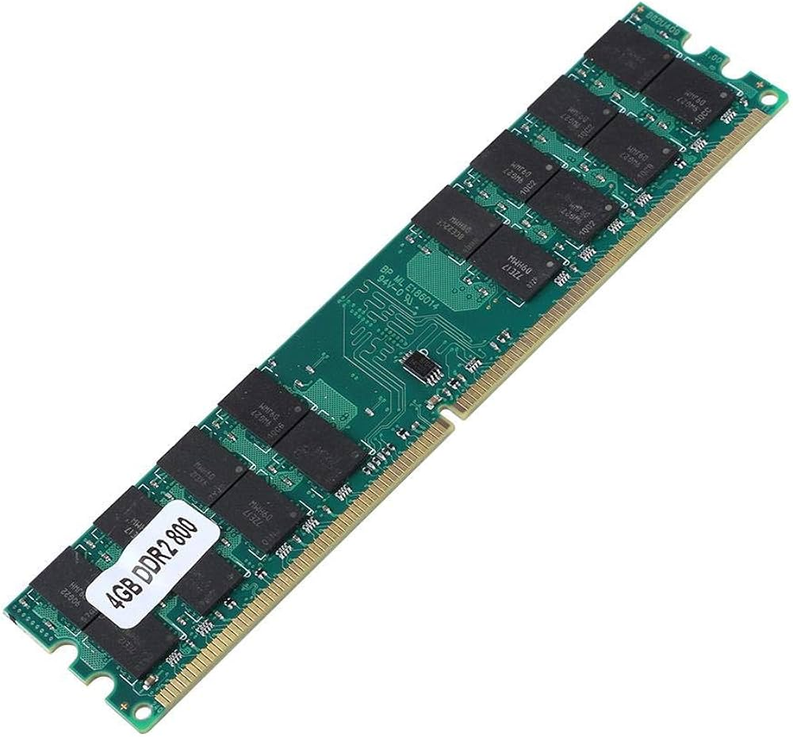

Pamięć DDR 2
Standard pamięci RAM nowszy oraz lepszy od DDR. Zapewnia on wyższą częstotliwość taktowania niż pamięć DDR – można liczyć na taktowanie od 400 do 1066 MHz. Atutem jest też zmniejszone zapotrzebowanie na energię w porównaniu do poprzednich standardów. Pamięci RAM DDR2 są dostępne w sprzedaży w modułach o pojemności od 256 MB do 4 GB RAM.

Pamięć RAM DDR2 a DDR – kluczowe różnice:
* Obniżono napięcie zasilania z 2.5 V na 1.8 V.
* Podwojono prędkość układu wejścia oraz wyjścia.
* Liczba pinów wzrosła ze 184 do 240.
* Zmodyfikowano wycięcie w płytce pamięci, co zapobiega zastosowaniu niekompatybilnych modułów.